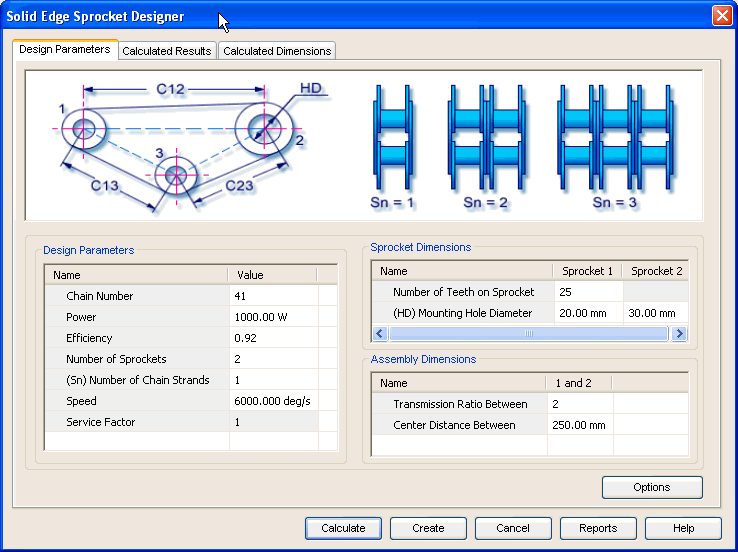

Sprocket Design Parameters tab
The Design Parameters tab provides the options you use to enter details required for selection and setting of chain and sprockets parameters.

Use this area to input parameters for strength calculations of chains. The chain type, chain numbers, number of sprockets, number of chain strands are some of the important parameters that you provide through this area.
Use this area to define specific parameters of the sprocket. Sprocket teeth number, transmission ratio and center distances are some of the important parameters you provide through this area.
Use this area to define assembly parameters of the sprockets. These parameters are used to constraint the sprockets space layout. Center distance and transmission ratio, between sprockets are the important parameters you provide through this area.
Use the Options button to access the Input Conditions window and select the method of calculation for strength check. The inputs provided in the Design Parameters tab are based on the selections from the Input Conditions window.